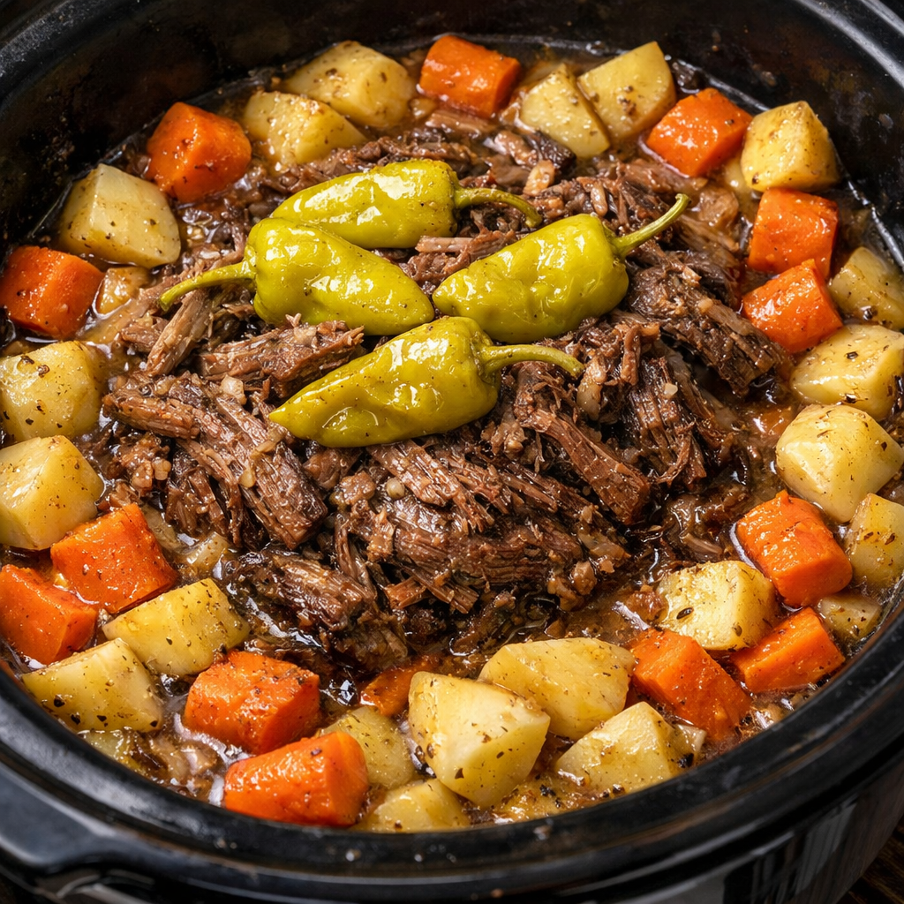

Mississippi Roast Recipe

Description:
Mississippi Roast is a tender, flavorful slow-cooker pot roast featuring chuck roast seasoned with ranch and au jus mixes, then cooked with butter, tangy pepperoncini peppers, potatoes, carrots, and onion. After 8 hours on low heat, it becomes melt-in-your-mouth tender with a rich, savory gravy—a comforting, naturally gluten-free one-pot meal.
This dish is gluten free if you buy gluten free seasonings.
Ingredients:
- 1 Chuck Roast (3-4 pounds)
- 1 pack of Gluten Free Ranch Dressing Mix
- 1 pack of Gluten Free Au Jus Gravy Mix
- 1/4 cup Butter
- 4-5 Pepperoncini Peppers
- 2 Tbs of Juice from the Pepper Jar
- 2 Average Potatoes Cubed
- 3 Average Carrots Sliced to 3/8"
- 1 Onion Chopped (Make sure it's fresh!)
Steps:
- Lightly butter the inside of the crockpot.
- Season the outside of the chuck roast with a third of both seasoning packs.
- Place the chuck roast in the bottom of your crockpot.
- Fill the space around the Chuck Roast with the vegetables including the peppers and the juice from the jar.
- Sprinkle the remainder of both seasoning packs
- Chop 1/4 cup of butter into pieces and spread around the top.
- Cook on low heat for 8 hours and enjoy!
*Disclaimer: It is up to the cook to ensure that all of their ingredients are gluten-free and their workspace is free from contamination in order to ensure a gluten free state of the food.